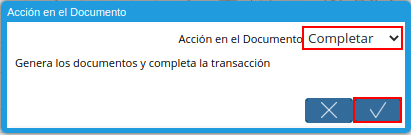

Crédito del Productor¶
Ubique y seleccione en el menú de ADempiere, la carpeta “Gestión de Asistencia al Agricultor”, luego seleccione la carpeta “Inversión Agrícola y Préstamos”, por último seleccione la ventana “Crédito del Productor”.
Imagen 1. Menú de ADempiere

Podrá visualizar la ventana “Crédito del Productor”, con los diferentes registros de créditos de productores.
Imagen 2. Ventana Crédito del Productor

Seleccione el icono “Registro Nuevo”, ubicado en la barra de herramientas de ADempiere.
Imagen 3. Icono Registro Nuevo
Seleccione en el campo “Organización”, la organización para la cual se encuentra realizando el registro.
Imagen 4. Campo Organización

Al guardar el registro de la ventana “Crédito de Productor”, podrá visualizar en el campo “No. del Documento”, el número de documento correspondiente a la secuencia del registro que se encuentra realizando.
Imagen 5. Campo No. del Documento

Seleccione el tipo de documento a generar en el campo “Tipo de Documento”, la selección de este define el comportamiento del documento que se esta elaborando, dicho comportamiento se encuentra explicado en el documento Tipo de Documento elaborado por ERPyA.
Imagen 6. Campo Tipo de Documento

Seleccione en el campo “F. Documento”, la fecha en la que se encuentra realizando el documento.
Imagen 7. Campo F. Documento

Seleccione en el campo “Tipo de Acuerdo”, el tipo de acuerdo correspondiente al registro que se encuentra realizando.
Imagen 8. Campo Tipo de Acuerdo

Seleccione en el campo “Definición de Costo de Cultivo”, la definición de costo de cultivo correspondiente al registro que se encuentra realizando.
Imagen 9. Campo Definición de Costo de Cultivo

Seleccione en el campo “Socio del Negocio”, el socio del negocio correspondiente al registro que se encuentra realizando.
Imagen 10. Campo Socio del Negocio

Seleccione en el campo “Usuario”, el usuario correspondiente al registro que se encuentra realizando.
Imagen 11. Campo Usuario

Seleccione en el campo “Válido Desde”, la fecha de inicio del rango o periodo de validez del registro que se encuentra realizando.
Imagen 12. Campo Válido Desde

Seleccione en el campo “Válido Hasta”, la fecha final del rango o periodo de validez del registro que se encuentra realizando.
Imagen 13. Campo Válido Hasta

Seleccione el icono “Guardar Cambios”, ubicado en la barra de herramientas de ADempiere.
Imagen 14. Icono Guardar Cambios
Seleccione la pestaña “Cultivos Asignados” y proceda al llenado de los campos correspondientes.
Imagen 15. Pestaña Cultivos Asignados

Seleccione en el campo “Cultivo”, el cultivo correspondiente al registro que se encuentra realizando.
Imagen 16. Campo Cultivo

Seleccione el icono “Guardar Cambios”, ubicado en la barra de herramientas de ADempiere.
Imagen 17. Icono Guardar Cambios
Seleccione la pestaña “Cuenta Financiera” y proceda al llenado de los campos correspondientes.
Imagen 18. Pestaña Cuenta Financiera

Introduzca en el campo “No. De Cuenta”, el número de cuenta correspondiente al registro que se encuentra realizando.
Imagen 19. Campo No. De Cuenta

Seleccione en el campo “Moneda”, la moneda correspondiente al registro que se encuentra realizando.
Imagen 20. Campo Moneda

Introduzca en el campo “Descripción”, una breve descripción correspondiente al registro que se encuentra realizando.
Imagen 21. Campo Descripción

Seleccione el icono “Guardar Cambios”, ubicado en la barra de herramientas de ADempiere.
Imagen 22. Icono Guardar Cambios
Seleccione la pestaña “Producto de la Cuenta” y proceda al llenado de los campos correspondientes.
Imagen 23. Pestaña Producto de la Cuenta

Seleccione en el campo “Producto Financiero”, el producto financiero correspondiente al registro que se encuentra realizando.
Imagen 24. Campo Producto Financiero

Seleccione en el campo “Válido Desde”, la fecha de inicio del rango o periodo de validez del registro que se encuentra realizando.
Imagen 25. Campo Válido Desde

Seleccione en el campo “Válido Hasta”, la fecha final del rango o periodo de validez del registro que se encuentra realizando.
Imagen 26. Campo Válido Hasta

Seleccione el icono “Guardar Cambios”, ubicado en la barra de herramientas de ADempiere.
Imagen 27. Icono Guardar Cambios
Seleccione la pestaña principal “Crédito (Productor)” y la opción “Completar”.
Imagen 28. Pestaña Principal Crédito Productor y Opción Completar

Seleccione la acción “Completar” y la opción “OK”.

Imagen 29. Acción Completar y Opción OK